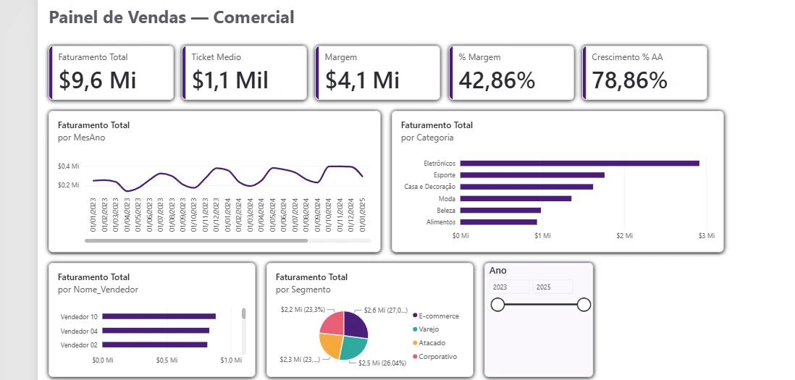
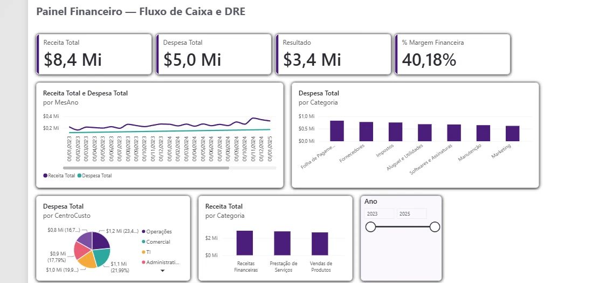
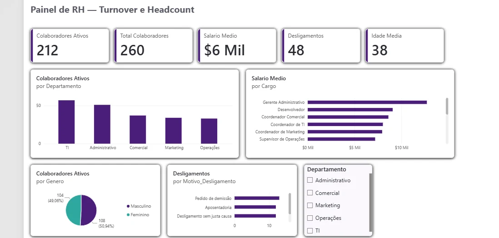
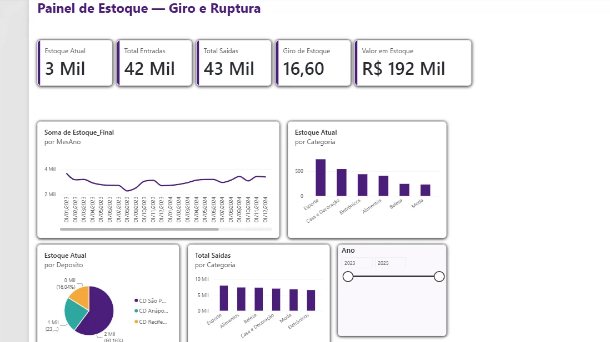

Transformo dados em decisões.
Painéis em Power BI, pipelines no Microsoft Fabric e automações em Python. Para empresas, atendo também pela Data Nexos.
Sou o Eduardo, analista de dados.
Pego informação espalhada em planilhas, sistemas e pastas e entrego algo confiável, que se atualiza sozinho e ajuda quem precisa decidir. Trabalho da modelagem ao painel final.
Experiência
- Consultor de Dados2026 a hoje
- Analista de Dados2025 a hoje
- Assistente de Dados2024 a 2025
Ferramentas
- Power BIDAX e modelagem
- Microsoft FabricLakehouse e pipelines
- PythonPySpark e automação
- ExcelAnálise e rotinas
-
01
Vendas e Comercial
Power BIFaturamento, ticket médio, margem e crescimento ano a ano, por categoria, vendedor e segmento.

-
02
Financeiro
Power BIFluxo de caixa e DRE simplificado: receita, despesa, resultado e margem, por categoria e centro de custo.

-
03
RH e Pessoas
Power BIHeadcount, turnover e folha salarial por departamento, cargo, gênero e motivo de desligamento.

-
04
Estoque e Logística
Power BIGiro de estoque, entradas, saídas e ruptura por categoria, produto e depósito, com evolução mensal.

-
05
Pipeline medalhão
FabricDo Excel solto em pasta ao dado governado, atualizado sozinho: Lakehouses em camadas, Data Factory, Dataflows Gen2, Direct Lake e notebooks PySpark, com o refresh do painel dentro do próprio fluxo.
- 01_ingest_bronzeÊxito
- 02_transform_silverÊxito
- 03_build_goldÊxito
- Atualizar datasetÊxito
Passe o mouse em um projeto para ver funcionando. Os painéis usam dados fictícios.